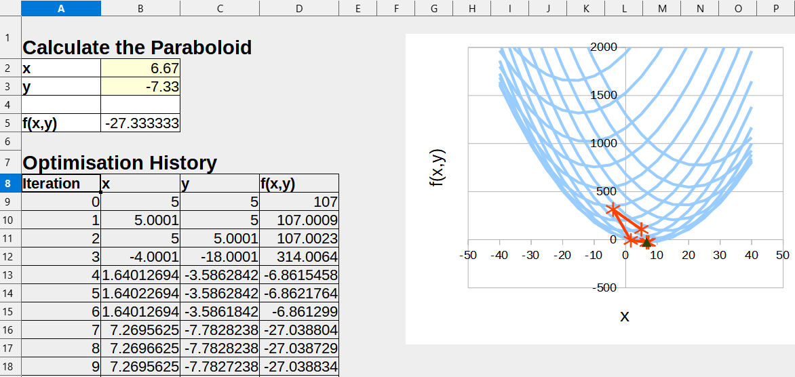

6. 使用电子表格仿真#
 加载教程到dapta应用程序
加载教程到dapta应用程序 在Github中查看文件
在Github中查看文件预计时间：15分钟
在这个例子中，我们探索了在仿真工作流中电子表格和宏的使用。
我们复制了简单优化问题的仿真工作流程，
但这次使用电子表格组件libreoffice-comp来计算抛物面函数，而不是纯Python组件。
没有时间亲自尝试这个示例吗？那就看**视频教程**吧。
{kind=link}
6.1. 组件说明#
像Microsoft's Excel®文件一样，电子表格在工程领域被广泛使用。
在仿真工作流程中，电子表格可用于：
导入数据，例如来自实验的数据；
自动对输入数据进行计算；
记录、可视化和存储输出。
组件API，电子表格可以轻松集成到任何dapta运行中。
libreoffice-comp包括LibreOffice的完整安装版，
其中包括电子表格编辑器（Calc）。Calc可以打开和保存其本地的Open Document Format (.ods)文件，
以及Microsoft Excel®格式(.xls)文件，并且它也兼容宏（当前支持的语言是LibreOffice Basic、BeanShell、JavaScript和Python，同时还支持导入Microsoft VBA宏）。了解更多有关编写LibreOffice宏的信息，
我们建议查看入门指南。参考文献1也为Calc的Python宏提供了很好的介绍。
请在这里下载示例电子表格（如上图所示）：paraboloid.ods。
它包括一个VBA宏，每当电子表格的x和y输入被更新时， 自动计算简单组件分析示例中的抛物面函数f(x,y)。 电子表格还包含一个最初为空的优化历史记录表，该表将用于存储和绘制运行期间的优化历程数据。
6.2. 打开已保存的会话#
由于我们之前已经创建和分析了抛物面组件，我们可以加载先前的会话以加快速度。
从界面控件中选择打开以加载我们先前会话的JSON格式版本（dapta_input.json）。
或者，将以下对象复制到文本编辑器中并在本地保存，然后选择打开以加载它。
{
"components": [
{
"name": "paraboloid",
"api": "generic-python3-comp:latest",
"options": {},
"parameters": {
"user_input_files": [],
"x": 5.0,
"y": 5.0,
"f_xy": 0.0
},
"inputs": {
"x": "default",
"y": "default"
},
"outputs": {
"f_xy": "default"
}
}
],
"connections": [],
"workflow": {
"start": "paraboloid",
"end": "paraboloid"
}
}
抛物面组件应该已经出现在工作区，但组件名称旁边的问号表示它缺少一些数据。
6.3. 更新抛物面组件#
将以下新的setup.py和compute.py API文件的内容复制到文本编辑器中，并将文件保存到本地：
setup.py函数与先前的函数类似，但它还将电子表格文件复制到输出文件夹中，并通过调用start_libreoffice函数以无头模式启动LibreOffice。compute.py函数打开电子表格，将输入的x和y值写入输入单元格（这将自动执行电子表格宏），然后将当前的x，y和计算出的f(x，y)值复制到优化历程记录表中。这也会自动更新线条图。最后保存并关闭电子表格。
在工作区中选择【抛物面组件】并打开它。
更新属性选项卡：
从API下拉菜单中选择
libreoffice-comp:latest通过单击相应的链接上传新的
setup.py和compute.pyAPI文件
然后，更新参数选项卡：
将以下 键/值 添加到JSON对象中：
ods_file：paraboloid.ods通过选择
上传用户输入文件来上传输入电子表格（paraboloid.ods）。
通过选择保存数据按钮保存并关闭组件。
您可以通过执行运行来检查组件是否按预期工作，或者在启动运行之前添加下一部分的驱动程序组件。
from datetime import datetime
from pathlib import Path
from shutil import copy2
from libreoffice import start_libreoffice
def setup(
inputs: dict = {"design": {}, "implicit": {}, "setup": {}},
outputs: dict = {"design": {}, "implicit": {}, "setup": {}},
parameters: dict = {
"user_input_files": [],
"inputs_folder_path": "",
"outputs_folder_path": "",
},
) -> dict:
"""A user editable setup function."""
# start libreoffice in headless mode
start_libreoffice()
# check that the spreadsheet file has been uploaded
inputs_folder = Path(parameters["inputs_folder_path"])
if not (inputs_folder / parameters["ods_file"]).is_file():
raise FileNotFoundError(
f"{parameters['ods_file']} needs to be uploaded by the user."
)
# copy spreadsheet to output folder
run_folder = Path(parameters["outputs_folder_path"])
copy2(
inputs_folder / parameters["ods_file"],
run_folder / parameters["ods_file"],
)
# set default inputs
if inputs:
for input_key, input_value in inputs["design"].items():
if input_value == "default":
try:
inputs["design"][input_key] = float(parameters[input_key])
except Exception as e:
print(f"Could not find {input_key} in the input parameters.")
# initialise outputs - required for OpenMDAO
if outputs:
for output_key, output_value in outputs["design"].items():
if output_value == "default":
try:
outputs["design"][output_key] = float(parameters[output_key])
except Exception as e:
print(f"Could not find {output_key} in the input parameters.")
message = f"{datetime.now().strftime('%Y%m%d-%H%M%S')}: Setup completed."
print(message)
return {
"message": message,
"parameters": parameters,
"inputs": inputs,
"outputs": outputs,
}
from datetime import datetime
from pathlib import Path
from libreoffice import store, open_file
def compute(
inputs: dict = {"design": {}, "implicit": {}, "setup": {}},
outputs: dict = {"design": {}, "implicit": {}, "setup": {}},
partials: dict = {},
options: dict = {},
parameters: dict = {
"user_input_files": [],
"inputs_folder_path": "",
"outputs_folder_path": "",
},
) -> dict:
"""A user editable compute function."""
run_folder = Path(parameters["outputs_folder_path"])
print("Starting user function evaluation.")
# open saved spreadsheet
file = str(run_folder.resolve() / parameters["ods_file"])
model = open_file(path=file)
# add data and plot
model, f_xy = paraboloid(model, inputs["design"])
outputs["design"]["f_xy"] = f_xy
# save spreadsheet
store(model, file=file)
model.close(True)
message = f"{datetime.now().strftime('%Y%m%d-%H%M%S')}: Saved ODS spreadsheet."
print(message)
return {"message": message, "outputs": outputs}
def paraboloid(model, inputs):
# set inputs in spreadsheet
sheet = model.Sheets.getByIndex(0)
sheet.getCellRangeByName("B2").Value = inputs["x"]
sheet.getCellRangeByName("B3").Value = inputs["y"]
# get calculated value
f_xy = sheet.getCellRangeByName("B5").Value
# store inputs and outputs in the Optimisation History ranges
starting_row = 8
row = starting_row
while True:
if "EMPTY" in str(sheet[row, 0].getType()):
break
else:
row += 1
# set current iteration number
if row == starting_row:
sheet[row, 0].Value = 0
else:
sheet[row, 0].Value = sheet[row - 1, 0].Value + 1
# set x, y, f_xy
sheet[row, 1].Value = inputs["x"]
sheet[row, 2].Value = inputs["y"]
sheet[row, 3].Value = f_xy
return model, f_xy
6.4. 添加驱动程序组件#
我们将重复使用之前在简单优化问题中使用的OpenMDAO驱动程序。 我们调整驱动程序参数以解决这个优化问题：
过在驱动程序参数中设置
approx_totals: true和fd_step: 0.0001来计算链接组件全微分（使用有限差分）。通过将【lot_history】选项添加到【visualise】参数列表中来显示优化迭代历程记录图。
创建驱动程序组件：
在工作区中单击右键并选择
添加空节点。选择空组件进行编辑。在
属性选项卡中，填写组件名称为open-mdao，并选择组件APIgeneric-python3-driver:latest。将以下
setup.py，compute.py，requirements.txt文件的内容复制到文本编辑器中，并在本地保存。然后在属性选项卡下上传它们。在
属性选项卡中，勾选驱动程序选项旁边的复选框。将以下参数JSON对象的内容复制到
参数选项卡文本框中。将下面的
om_component.py文件的内容复制到文本编辑器中并将其保存到本地。 然后通过选择上传用户输入文件在参数选项卡下上传它。选择
保存数据保存并关闭组件。
from datetime import datetime
from pathlib import Path
def setup(
inputs: dict = {"design": {}, "implicit": {}, "setup": {}},
outputs: dict = {"design": {}, "implicit": {}, "setup": {}},
parameters: dict = {
"user_input_files": [],
"inputs_folder_path": "",
"outputs_folder_path": "",
},
) -> dict:
"""Editable setup function."""
if "driver" not in parameters:
# assume we want to run an optimisation with default settings
parameters["driver"] = {"type": "optimisation"}
message = f"{datetime.now().strftime('%Y%m%d-%H%M%S')}: Setup completed."
return {"message": message, "parameters": parameters}
from datetime import datetime
from pathlib import Path
import traceback
from contextlib import redirect_stdout
import numpy as np
import json
from copy import deepcopy
from concurrent.futures import ThreadPoolExecutor
import openmdao.api as om
from matplotlib import pyplot as plt # type: ignore
from om_component import OMexplicitComp, OMimplicitComp # type: ignore
OM_DEFAULTS = {
"nonlinear_solver": {
"class": om.NewtonSolver,
"kwargs": {"solve_subsystems": False},
},
"linear_solver": {
"class": om.DirectSolver,
"kwargs": {},
},
}
def compute(
inputs: dict = {"design": {}, "implicit": {}, "setup": {}},
outputs: dict = {"design": {}, "implicit": {}, "setup": {}},
partials: dict = {},
options: dict = {},
parameters: dict = {
"user_input_files": [],
"inputs_folder_path": "",
"outputs_folder_path": "",
},
) -> dict:
"""Editable compute function."""
print("OpenMDAO problem setup started.")
workflow = parameters["workflow"]
run_folder = Path(parameters["outputs_folder_path"])
all_connections = parameters.get("all_connections", [])
# 1) define the simulation components
prob = om.Problem()
# add groups
groups = {}
if "Groups" in parameters:
for group in parameters["Groups"]:
name = reformat_compname(group["name"])
kwargs = group.get("kwargs", {})
groups[name] = prob.model.add_subsystem(
name,
om.Group(),
**kwargs,
)
if "solvers" in group:
for solver in group["solvers"]:
if solver["type"] == "nonlinear_solver":
groups[name].nonlinear_solver = OM_DEFAULTS["nonlinear_solver"][
"class"
](**OM_DEFAULTS["nonlinear_solver"]["kwargs"])
solver_obj = groups[name].nonlinear_solver
elif solver["type"] == "linear_solver":
groups[name].linear_solver = OM_DEFAULTS["linear_solver"][
"class"
](**OM_DEFAULTS["linear_solver"]["kwargs"])
solver_obj = groups[name].nonlinear_solver
else:
raise ValueError(
f"Solver of type {solver['type']} is not implemented."
)
if "options" in solver:
for option, val in solver["options"].items():
if option in ["iprint", "maxiter"]:
solver_obj.options[option] = int(val)
else:
solver_obj.options[option] = val
# add components
def get_comp_by_name(name, objs: dict):
comp_type_lookup = {
"ExplicitComponents": OMexplicitComp,
"ImplicitComponents": OMimplicitComp,
}
for key, obj in objs.items():
filtered = [comp_obj for comp_obj in obj if comp_obj["name"] == name]
if filtered:
return [comp_type_lookup[key], filtered[0]]
return OMexplicitComp, None # default
model_lookup = {}
for component in workflow:
# defaults
kwargs = {}
fd_step = 0.1
model = prob.model
has_compute_partials = True # set this to False if fd gradients should be used
objs = {
k: parameters[k]
for k in ["ExplicitComponents", "ImplicitComponents"]
if k in parameters
}
comp_type, comp_obj = get_comp_by_name(component, objs)
if comp_obj:
kwargs = comp_obj.get("kwargs", kwargs)
fd_step = comp_obj.get("fd_step", fd_step)
has_compute_partials = comp_obj.get(
"has_compute_partials", has_compute_partials
)
model = groups.get(comp_obj.get("group"), model)
model_lookup[component] = model
model.add_subsystem(
reformat_compname(component),
comp_type(
compname=component,
fd_step=fd_step,
has_compute_partials=has_compute_partials,
),
**kwargs,
)
if "ExecComps" in parameters and parameters["ExecComps"]:
for component in parameters["ExecComps"]:
prob.model.add_subsystem(
reformat_compname(component["name"]),
om.ExecComp(component["exprs"]),
**component["kwargs"],
)
# 2) define the component connections
def get_var_str(c, name):
return f"{reformat_compname(c)}.{name.replace('.','-')}"
for connection in all_connections:
if connection["type"] == "design":
prob.model.connect(
get_var_str(connection["origin"], connection["name_origin"]),
get_var_str(connection["target"], connection["name_target"]),
)
if parameters["driver"]["type"] == "optimisation":
# 3) setup the optimisation driver options
prob.driver = om.ScipyOptimizeDriver()
prob.driver.options["optimizer"] = parameters["optimizer"]
prob.driver.options["maxiter"] = parameters["max_iter"]
prob.driver.options["tol"] = parameters["tol"]
prob.driver.opt_settings["disp"] = parameters["disp"]
prob.driver.options["debug_print"] = parameters["debug_print"]
if "approx_totals" in parameters and parameters["approx_totals"]:
# ensure FD gradients are used
prob.model.approx_totals(
method="fd", step=parameters["fd_step"], form=None, step_calc=None
)
elif parameters["driver"]["type"] == "doe":
# 3) alternative: setup a design of experiments
levels = parameters["driver"]["kwargs"].get("levels", 2)
if isinstance(levels, float): # All have the same number of levels
levels = int(levels)
elif isinstance(levels, dict): # Different DVs have different number of levels
levels = {k: int(v) for k, v in levels.items()}
prob.driver = DOEDriver(
om.FullFactorialGenerator(levels=levels),
reset_vars=parameters["driver"]["kwargs"].get("reset_vars", {}),
store_case_data=parameters["driver"]["kwargs"].get("store_case_data", {}),
store_parameters=parameters["driver"]["kwargs"].get("store_parameters", {}),
run_folder=run_folder,
)
# 4) add design variables
if "input_variables" in parameters:
for var in parameters["input_variables"]:
upper = var["upper"]
lower = var["lower"]
if "component" in var:
comp_obj = reformat_compname(var["component"])
prob.model.add_design_var(
f"{comp_obj}.{var['name'].replace('.', '-')}",
lower=lower,
upper=upper,
)
else:
prob.model.add_design_var(
var["name"].replace(".", "-"), lower=lower, upper=upper
)
val_default = var.get("value", lower)
prob.model.set_input_defaults(
var["name"].replace(".", "-"), val_default
)
# 5) add an objective and constraints
if "output_variables" in parameters:
for var in parameters["output_variables"]:
comp_obj = reformat_compname(var["component"])
name = f"{comp_obj}.{var['name'].replace('.', '-')}"
# set scaling from parameter input file
scaler = var.get("scaler", None)
adder = var.get("adder", None)
if var["type"] == "objective":
prob.model.add_objective(name, scaler=scaler, adder=adder)
elif var["type"] == "constraint":
lower = var.get("lower", None)
upper = var.get("upper", None)
prob.model.add_constraint(
name, lower=lower, upper=upper, scaler=scaler, adder=adder
)
prob.setup() # required to generate the n2 diagram
print("OpenMDAO problem setup completed.")
if "visualise" in parameters and "n2_diagram" in parameters["visualise"]:
# save n2 diagram in html format
om.n2(
prob,
outfile=str(run_folder / "n2.html"),
show_browser=False,
)
if parameters["driver"]["type"] == "optimisation":
dict_out = run_optimisation(prob, parameters, run_folder)
# elif parameters["driver"]["type"] == "check_partials":
# dict_out = run_check_partials(prob, parameters)
# elif parameters["driver"]["type"] == "check_totals":
# dict_out = run_check_totals(prob, parameters)
elif parameters["driver"]["type"] == "doe":
nb_threads = int(parameters["driver"].get("nb_threads", 1))
dict_out = run_doe(prob, parameters, run_folder, nb_threads=nb_threads)
# elif parameters["driver"]["type"] == "post":
# dict_out = run_post(prob, parameters)
else:
with open(run_folder / "trim_convergence.log", "w") as f:
with redirect_stdout(f):
prob.run_model()
dict_out = {}
message = f"{datetime.now().strftime('%Y%m%d-%H%M%S')}: OpenMDAO compute completed."
print(message)
if dict_out:
outputs["design"] = dict_out
return {"message": message, "outputs": outputs}
def run_optimisation(prob, parameters, run_folder):
# 6) add a data recorder to the optimisation problem
r_name = str(
run_folder
/ (
"om_problem_recorder_"
+ datetime.now().strftime("%Y%m%d-%H%M%S")
+ ".sqlite"
)
)
r = om.SqliteRecorder(r_name)
prob.driver.add_recorder(r)
prob.driver.recording_options["record_derivatives"] = True
# setup the problem again
prob.setup()
if "visualise" in parameters and "scaling_report" in parameters["visualise"]:
# NOTE: running the model can generate large large amounts of stored data in orchestrator, which
# can cause prob.setup() to fail if it is called again, so only execute
# prob.run_model() after all setup has been completed
with open(run_folder / "scaling_report.log", "w") as f:
with redirect_stdout(f):
prob.run_model()
prob.driver.scaling_report(
outfile=str(run_folder / "driver_scaling_report.html"),
title=None,
show_browser=False,
jac=True,
)
# 7) execute the optimisation
try:
with open(run_folder / "run_driver.log", "w") as f:
with redirect_stdout(f):
prob.run_driver()
except Exception as e:
print(f"run driver exited with error: {e}")
tb = traceback.format_exc()
raise ValueError("OpenMDAO Optimisation error: " + tb)
opt_output = {}
# print("Completed model optimisation - solution is: \n inputs= (")
for var in parameters["input_variables"]:
name = var["name"]
# print(
# f"{comp}.{name}: "
# + str(prob.get_val(f"{comp}.{name.replace('.', '-')}"))
# + " "
# )
if "component" in var:
comp = var["component"]
opt_output[f"{comp}.{name}"] = prob.get_val(
f"{reformat_compname(comp)}.{name.replace('.', '-')}"
).tolist()
else:
opt_output[name] = prob.get_val(name.replace(".", "-")).tolist()
# print("), \n outputs = (")
for var in parameters["output_variables"]:
comp = var["component"]
name = var["name"]
# print(
# f"{comp}.{name}: "
# + str(prob.get_val(f"{comp}.{name.replace('.', '-')}"))
# + " "
# )
opt_output[f"{comp}.{name}"] = prob.get_val(
f"{reformat_compname(comp)}.{name.replace('.', '-')}"
).tolist()
# print(")")
print(opt_output)
if "visualise" in parameters and "plot_history" in parameters["visualise"]:
post_process_optimisation(parameters, run_folder, r_name)
return opt_output
def run_doe(prob, parameters, run_folder, nb_threads=1):
# 7) execute the driver in parallel
def run_cases_thread(color):
print(f"Starting thread {color}.")
prob_copy = deepcopy(prob)
print(f"problem id for color {color}: ", id(prob_copy))
# set driver instance properties
prob_copy.driver.nb_threads = nb_threads
prob_copy.driver.color = color
try:
prob_copy.run_driver()
except Exception as e:
print(f"run driver exited with error: {e}")
tb = traceback.format_exc()
return f"OpenMDAO DOE error: {tb}"
print(f"Completed thread {color}.")
with open(run_folder / f"run_driver.log", "w") as f:
with redirect_stdout(f):
with ThreadPoolExecutor(max_workers=nb_threads) as executor:
msgs = executor.map(run_cases_thread, range(nb_threads))
errors = list(msgs)
if errors and errors[0]:
raise ValueError(errors[0])
print("completed all threads")
if "visualise" in parameters and "plot_history" in parameters["visualise"]:
from post import post_process_doe
post_process_doe(
parameters,
run_folder,
files=[f"results_{c}.json" for c in range(nb_threads)],
)
return {}
def reformat_compname(name):
# openmdao doesn't allow "-" character in component names
return name.replace("-", "_")
def post_process_optimisation(
parameters, run_folder, r_name, only_plot_major_iter=True
):
# read database
# Instantiate your CaseReader
cr = om.CaseReader(r_name)
# Isolate "problem" as your source
driver_cases = cr.list_cases("driver", out_stream=None)
# plot the iteration history from the recorder data
inputs_history = {
key: []
for key in [
f"{reformat_compname(var['component'])}.{var['name'].replace('.', '-')}"
for var in parameters["input_variables"]
]
}
outputs_history = {
key: []
for key in [
f"{reformat_compname(var['component'])}.{var['name'].replace('.', '-')}"
for var in parameters["output_variables"]
]
}
for key in driver_cases:
case = cr.get_case(key)
if (only_plot_major_iter and case.derivatives) or not only_plot_major_iter:
# get history of inputs
for key in inputs_history:
inputs_history[key].append(case.outputs[key])
# get history of outputs
for key in outputs_history:
outputs_history[key].append(case.outputs[key])
# plot output in userfriendly fashion
_plot_iteration_histories(
inputs_history=inputs_history,
outputs_history=outputs_history,
run_folder=run_folder,
)
def _plot_iteration_histories(
inputs_history=None, outputs_history=None, run_folder=None
):
# plot input histories
for key in inputs_history:
input_data = inputs_history[key]
input_data = np.array(input_data)
iterations = range(input_data.shape[0])
plt.figure()
for data_series in input_data.T:
plt.plot(iterations, data_series, "-o")
plt.grid(True)
plt.title(key)
plt.savefig(str(run_folder / (key + ".png")))
# plot output histories
for key in outputs_history:
output_data = outputs_history[key]
output_data = np.array(output_data)
iterations = range(output_data.shape[0])
plt.figure()
for data_series in output_data.T:
plt.plot(iterations, data_series, "-o")
plt.grid(True)
plt.title(key)
plt.savefig(str(run_folder / (key + ".png")))
plt.show()
class DOEDriver(om.DOEDriver):
def __init__(
self,
generator=None,
reset_vars: dict = None,
store_case_data: list = None,
store_parameters: dict = None,
run_folder: Path = None,
**kwargs,
):
self.reset_vars = reset_vars
self.cases_store = []
self.store_case_data = store_case_data
self.store_parameters = store_parameters
self.run_folder = run_folder
self.nb_threads = 1
self.color = 0
super().__init__(generator=generator, **kwargs)
def run(self):
"""
Generate cases and run the model for each set of generated input values.
Returns
-------
bool
Failure flag; True if failed to converge, False is successful.
"""
self.iter_count = 0
self._quantities = []
# set driver name with current generator
self._set_name()
# Add all design variables
dv_meta = self._designvars
self._indep_list = list(dv_meta)
# Add all objectives
objs = self.get_objective_values()
for name in objs:
self._quantities.append(name)
# Add all constraints
con_meta = self._cons
for name, _ in con_meta.items():
self._quantities.append(name)
for case in self._parallel_generator(self._designvars, self._problem().model):
print(f"Starting case on thread {self.color}.")
self._custom_reset_variables()
self._run_case(case)
self.iter_count += 1
self._custom_store_to_json()
return False
def _custom_reset_variables(self):
# reset the initial variable guesses
for k, v in self.reset_vars.items():
self._problem()[k] = v
def _custom_store_to_json(self):
# store the outputs to the json database
self.cases_store.append(
{
**self.store_parameters,
**{
k.split(".")[-1]: self._problem()[k][0]
for k in self.store_case_data
},
}
)
# dump to json file
fname = f"results_{self.color}.json"
with open(self.run_folder / fname, "w", encoding="utf-8") as f:
json.dump(self.cases_store, f)
def _parallel_generator(self, design_vars, model=None):
"""
Generate case for this thread.
Parameters
----------
design_vars : dict
Dictionary of design variables for which to generate values.
model : Group
The model containing the design variables (used by some generators).
Yields
------
list
list of name, value tuples for the design variables.
"""
size = self.nb_threads
color = self.color
generator = self.options["generator"]
for i, case in enumerate(generator(design_vars, model)):
if i % size == color:
yield case
if __name__ == "__main__":
with open("open-mdao-driver/parameters.json", "r") as f:
parameters = json.load(f)
parameters["all_connections"] = [
{
"origin": "vspaero",
"name_origin": "CL",
"target": "trim",
"name_target": "CL",
"type": "design",
},
{
"origin": "vspaero",
"name_origin": "CMy",
"target": "trim",
"name_target": "CMy",
"type": "design",
},
]
parameters["workflow"] = ["vspaero", "trim"] # defined by controller
parameters["outputs_folder_path"] = "outputs" # defined by component generic api
compute(
inputs={},
outputs={"design": {}},
partials=None,
options=None,
parameters=parameters,
)
numpy==1.23.5
openmdao==3.16.0
matplotlib==3.7.0
fluids==1.0.22
pandas==1.5.3
{
"user_input_files": [],
"optimizer": "SLSQP",
"max_iter": 20,
"tol": 1e-8,
"disp": true,
"debug_print": [
"desvars",
"ln_cons",
"nl_cons",
"objs",
"totals"
],
"approx_totals": true,
"fd_step": 0.0001,
"input_variables": [
{
"component": "paraboloid",
"name": "x",
"lower": -50,
"upper": 50
},
{
"component": "paraboloid",
"name": "y",
"lower": -50,
"upper": 50
}
],
"output_variables": [
{
"component": "paraboloid",
"type": "objective",
"name": "f_xy"
}
],
"driver": {
"type": "optimisation"
},
"visualise": [
"n2_diagram",
"plot_history"
]
}
""" Optimisation Component classes for OpenMDAO and associated utilities."""
import numpy as np
import openmdao.api as om # type: ignore
from component_api2 import call_compute, call_setup
import traceback
class OMexplicitComp(om.ExplicitComponent):
"""standard component that follows the OM conventions"""
def __init__(self, compname, fd_step, has_compute_partials=True):
super().__init__()
self.compname = compname
self.get_grads = False
self.iter = 0
self.partial_dict = None
self.fd_step = fd_step
self._has_compute_partials = has_compute_partials # overrides parent class attribute with user defined parameter
def setup(self):
message = {"component": self.compname}
_, component_dict = call_setup(message)
inputs = component_dict["input_data"]["design"]
outputs = component_dict["output_data"]["design"]
# initialise the inputs
if inputs:
for variable in inputs:
self.add_input(variable.replace(".", "-"), val=inputs[variable])
# initialise the outputs
if outputs:
for variable in outputs:
self.add_output(variable.replace(".", "-"), val=outputs[variable])
def setup_partials(self):
# Get the component partial derivative information
message = {"component": self.compname}
_, component_dict = call_setup(message)
if "partials" in component_dict and component_dict["partials"]:
self.partial_dict = component_dict["partials"]
for resp, vars in self.partial_dict.items():
for var, vals in vars.items():
self.declare_partials(
resp.replace(".", "-"), var.replace(".", "-"), **vals
)
else:
# calculate all paritials using finite differencing
self.declare_partials("*", "*", method="fd", step=self.fd_step)
def compute(self, inputs, outputs, discrete_inputs=None, discrete_outputs=None):
print("Calling compute.")
# calculate the outputs
# Note: transform all np.ndarrays into nested lists to allow formatting to json
input_dict = {"design": reformat_inputs(inputs._copy_views())}
message = {
"component": self.compname,
"inputs": input_dict,
"get_grads": False,
"get_outputs": True,
}
print("message: \n", str(message))
try:
_, data = call_compute(message)
if not "outputs" in data:
raise ValueError(f"Error: Compute output missing - output was: {data}.")
except Exception as e:
print(f"Compute of {self.compname} failed, input data was: {str(message)}")
tb = traceback.format_exc()
print(tb)
raise ValueError(
f"OM Explicit component {self.compname} compute error: " + tb
)
val_outputs = data["outputs"]["design"]
# OpenMDAO doesn't like the outputs dictionary to be overwritten, so
# assign individual outputs one at a time instead
for output in outputs:
outputs[output] = val_outputs[output.replace("-", ".")]
def compute_partials(self, inputs, J):
"""Jacobian of partial derivatives."""
print("Calling compute_partials.")
self.iter += 1
input_dict = reformat_inputs(inputs._copy_views())
message = {
"component": self.compname,
"inputs": input_dict,
"get_grads": True,
"get_outputs": False,
}
print("message: \n", str(message))
try:
_, data = call_compute(message)
if not "partials" in data:
raise ValueError(
f"Error: Compute partial derivatives missing - output was: {data}."
)
self.partial_dict = data["partials"]
except Exception as e:
print(
f"Compute partials of {self.compname} failed, input data was: {str(message)}"
)
tb = traceback.format_exc()
print(tb)
raise ValueError(
f"OM Explicit component {self.compname} compute error: " + tb
)
if self.partial_dict:
for resp, vars in self.partial_dict.items():
for var, vals in vars.items():
if "val" in vals:
J[resp.replace(".", "-"), var.replace(".", "-")] = vals["val"]
# print(dict(J))
else:
raise ValueError(f"Component {self.compname} has no Jacobian defined.")
class OMimplicitComp(om.ImplicitComponent):
"""standard implicit component that follows the OM conventions"""
def __init__(self, compname, fd_step, has_compute_partials=False):
super().__init__()
self.compname = compname
self.get_grads = False
self.iter = 0
self.partial_dict = None
self.fd_step = fd_step
def setup(self):
message = {"component": self.compname}
_, component_dict = call_setup(message)
inputs = component_dict["input_data"]["design"]
outputs = component_dict["output_data"]["design"]
# initialise the inputs
if inputs:
for variable in inputs:
self.add_input(variable.replace(".", "-"), val=inputs[variable])
# initialise the outputs
if outputs:
for variable in outputs:
self.add_output(variable.replace(".", "-"), val=outputs[variable])
def setup_partials(self):
message = {"component": self.compname}
_, component_dict = call_setup(message)
if "partials" in component_dict and component_dict["partials"]:
self.partial_dict = component_dict["partials"]
for resp, vars in self.partial_dict.items():
for var, vals in vars.items():
self.declare_partials(
resp.replace(".", "-"), var.replace(".", "-"), **vals
)
else:
# calculate all paritials using finite differencing
self.declare_partials("*", "*", method="fd", step=self.fd_step)
def apply_nonlinear(self, inputs, outputs, residuals):
input_dict = {"design": reformat_inputs(inputs._copy_views())}
message = {
"component": self.compname,
"inputs": input_dict,
"get_grads": False,
"get_outputs": True,
}
print("message: \n", str(message))
try:
_, data = call_compute(message)
if not "outputs" in data:
raise ValueError(f"Error: Compute output missing - output was: {data}.")
except Exception as e:
print(f"Compute of {self.compname} failed, input data was: {str(message)}")
tb = traceback.format_exc()
print(tb)
raise ValueError(
f"OM Explicit component {self.compname} compute error: " + tb
)
val_outputs = data["outputs"]["design"]
for output in outputs:
residuals[output] = val_outputs[output.replace("-", ".")]
def reformat_inputs(inputs):
input_dict = inputs
for key in [*input_dict.keys()]:
new_key = key.split(".")[-1].replace("-", ".")
input_dict[new_key] = input_dict.pop(key)
if isinstance(input_dict[new_key], np.ndarray):
input_dict[new_key] = input_dict[new_key].tolist()
return input_dict
6.4.1. 执行工作流程#
现在，我们可以通过在运行控件界面中【运行】符号 ▶ 来执行优化设计。
与之前一样，在13次paraboloid组件迭代（1次open-mdao组件迭代）后，运行完成。
6.4.2. 检查输出#
运行日志总结了组件的输出。通过在界面控件中选择查看日志来打开日志。
日志的【un_output】条目（在日志的末尾）应该显示【OpenMDAO计算已完成】。
接下来，关闭运行日志并选择paraboloid组件。然后选择日志选项卡并单击下载文件快照。
打开下载的zip文件夹并在outputs文件夹下打开【araboloid.ods】输出电子表格。 优化历程数据应显示为左侧的0到12次迭代。此数据还应在右侧的线图中绘制。 历史数据包括用于计算SLSQP算法使用的有限差分梯度的主迭代、次迭代（线搜索）和函数评估。
同样，您可以检查open-mdao组件的输出，其中应包括显示主要迭代的收敛历程线图。
最后，您可以通过选择界面控件中的下载来保存会话数据和运行日志。
6.5. 清理#
通过选择界面中的创建来删除您的会话，可能需要一分钟左右在云端重置会话。